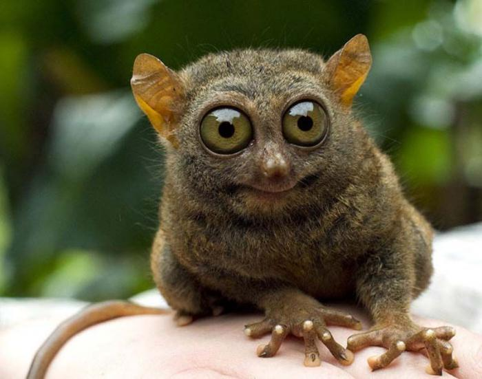
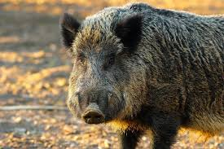
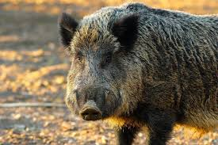

Дикие животные
Дикие животные- это объекты животного мира, к которым относят животных, естественной средой обитания которых является дикая природа, а также находящиеся в состоянии естественной свободы, содержащиеся в полусвободных условиях или в неволе.
Бобер Лимур Кабан.
Бобер-род млекопитающих из отряда грызунов.
Лимуры-инфаотряд приматов из подотряда полуобезьян.
Кабаны-парнокопытные млекопитающие из рода кабанов семейства свининых.
чём разница между дикими и домашними животными?
Дикими животными называют животных, которые живут сами по себе в естественной среде обитания. Домашние животные- это животные, которых специально разводит человек. Домашние животные появились от диких, которые приучил человек. От диких животных человек получает пищу и мех.
Самые редкие дикие животные
1.Амурский тигр
2.Дикий северный олень.
3.Сайгак.
4.Антлантический морж.
5.Белый медведь.
6.Снежный барс.
7.Аргали.
8.Зубр.
9.Переднеазиатский Леопард.
степные (тушканчик, заяц, хорек, сайгак);
обитатели пустынь (суслик, еж, лисица корсак, тушканчик);
Самые опасные паукообразные — банановый паук
САМЫЕ ОПАСНЫЕ ЖИВОТНЫЕ
Кольцевидный осьминог
Медведь
Африканский слон

 
Ссылка на 2 страницу

Ссылка на 2 страницу